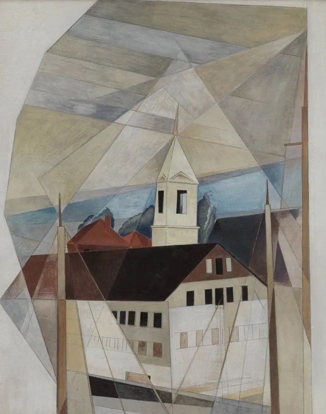

Hopper to Demuth
Box of Tricks
Charles Demuth, 1919

- Medium
- Gouache and graphite on cardboard
- Collection
- Pennsylvania Academy of the Fine Arts, Philadelphia
- Accession no.
- 1984.8
- Record checked
- Page-verified
- Image rights
- Public-domain image
Source · note 144
Charles Demuth, Box of Tricks, 1919, gouache and graphite on cardboard, Pennsylvania Academy of the Fine Arts, Philadelphia, 1984.8, accessed November 2026, https://pafa.org/museum/collection/item/box-tricks. Page-verified. The museum's text places the work in Gloucester in the summer of 1919, when Demuth painted outdoor architectural subjects there, and states “No known copyright restrictions.”